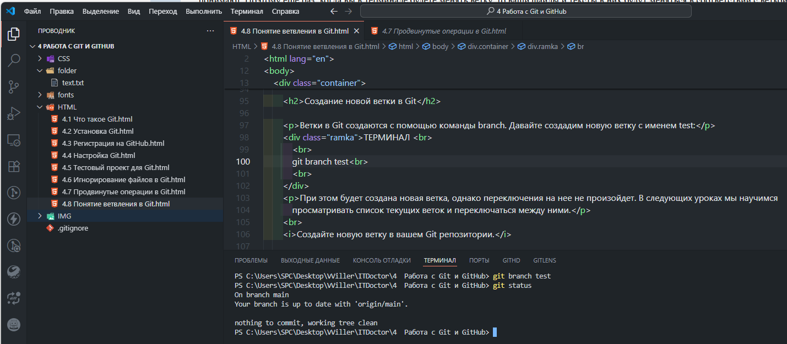
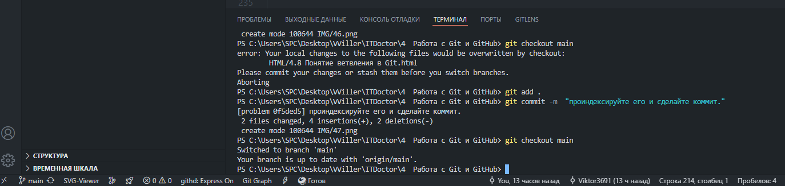
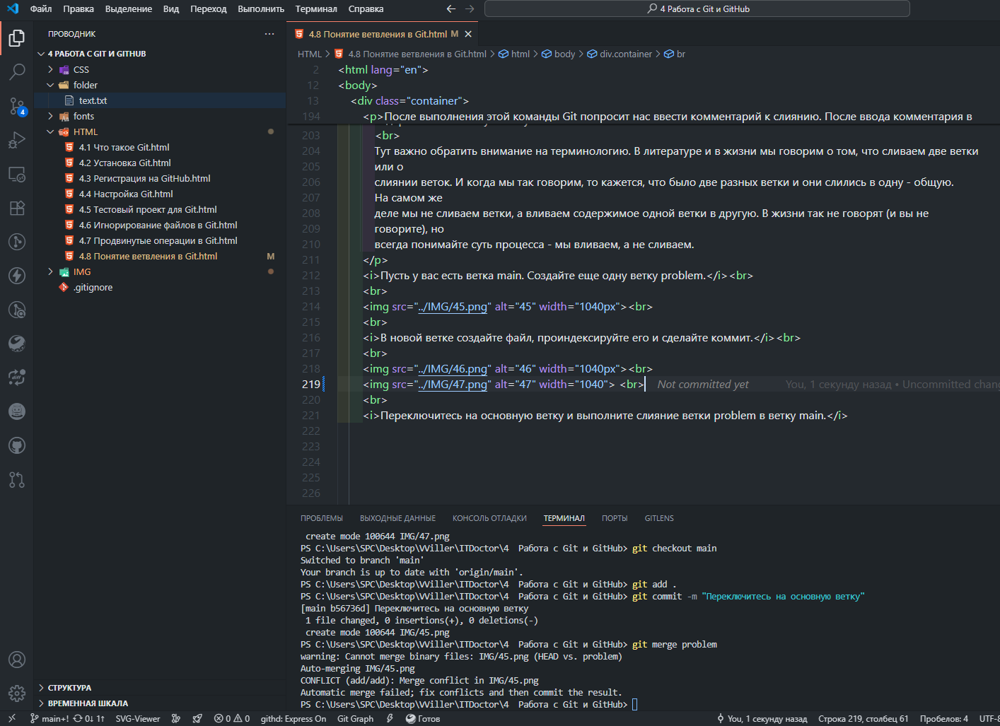
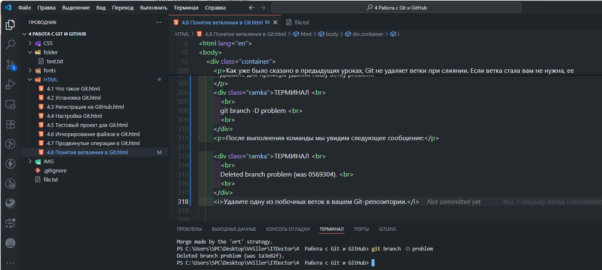
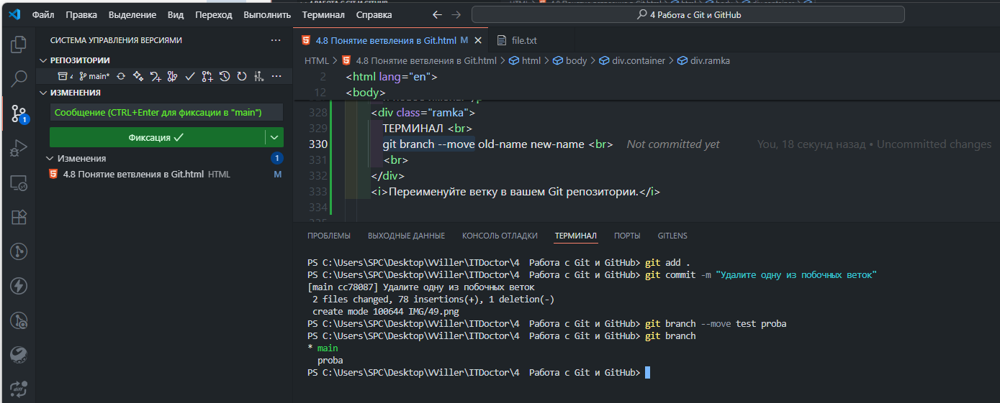
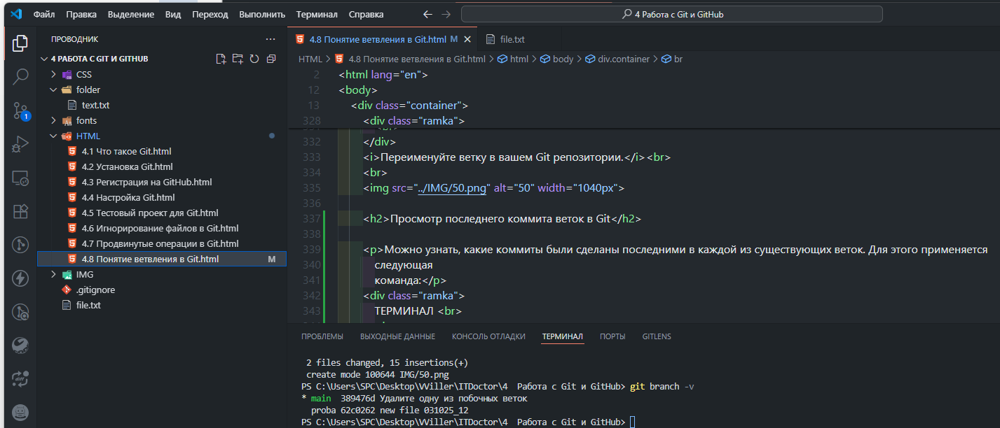
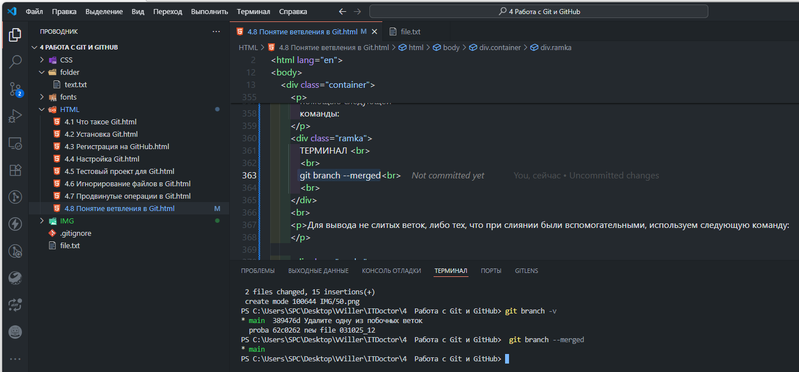
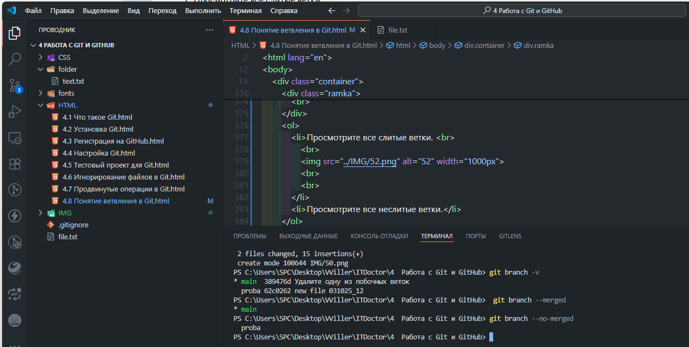

4.8 Понятие ветвления в Git
Самым полезным инструментом в Git являются ветки. Они позволяют вести параллельную работу над проектом,
переключаясь по
мере необходимости между ветками, решая различные задачи. Давайте рассмотрим на примере, в чем суть веток и
как их
используют на практике.
Итак, как вы уже знаете, по умолчанию у нас есть одна ветка - master. Обычно эту ветку считают основной.
Можно, однако,
создавать и дополнительные ветки, как правило для решения частных задач проекта.
При создании новой ветки в ней будут копии файлов нашего проекта. Мы будем писать в них код, а затем, когда
задача будет
выполнена, мы сольем код новой ветки с нашей основной веткой. Таким образом, можно параллельно вести работу
над
несколькими проблемами, так, что они не будут мешать другу другу. И, по мере готовности отправлять решенные
проблемы на
продакшн (то есть юзерам для использования).
При этом, при переключении между ветками, Git будет сам менять файлы в папке с вашим проектом. То есть одни
файлы будут
исчезать, а показываться другие. Также будут меняться тексты файлов, если они отличаются от ветки к ветке.
Это важное
место, но новички его не всегда понимают. Поэтому еще раз: когда вы в терминале будете менять ветку, то ваши
файлы и
тексты в них будут меняться в соответствии с веткой. Физически! Сами! Прям в открытом редакторе текст вашего
файла будет
меняться на другой! Это очень круто и удобно.
Посмотрим на примере, как это делается на практике. Пусть у вас есть некоторый проект. В ветке master
находится его
боевая текущая версия, которой пользуются пользователи. Пусть вы разрабатываете новую фичу. Для этого вы
создали новую
ветку feature. В ней вы пишите код, реализуя нужную вам задачу. Вдруг звонит телефон и ваш начальник
говорит, что на
проекте обнаружен серьезный баг и его срочно нужно исправить.
Для этого вы создаете ветку fix, копируя в нее весь код проекта из ветки master. Вы пишите код, исправляющий
баг, а
затем вливаете этот код в основную ветку master и отправляете этот код на продакшн.
Затем переключаетесь на ветку feature и спокойно продолжаете работу над вашей фичей. Когда она будет
закончена, вы
вливаете ее в основую ветку master.
В следующих уроках мы продолжим знакомиться с ветками на практике.
Ветка master в Git
По умолчанию имя основной ветки в Git - master. Технически это не особенная ветка - она точно такая же, как и
все
остальные ветки. Однако, зачастую эту ветку используют как основную ветку проекта, а остальные ветки делают
вспомогательными, создавая их для решения частных задач, а потом удаляя их.
Последнее время часто заменяют название master на main, переименовывая главную ветку проекта. Дело в том,
что слово
"master" переводится как "хозяин" и это теперь не политкорректно.
Создание новой ветки в Git
Ветки в Git создаются с помощью команды branch. Давайте создадим новую ветку с именем test:
git branch test
При этом будет создана новая ветка, однако переключения на нее не произойдет. В следующих уроках мы научимся просматривать список текущих веток и переключаться между ними.
Создайте новую ветку в вашем Git репозитории.

Просмотр веток в Git
Для того, чтобы просмотреть все ветки, которые есть в вашем репозитории, нужно выполнить команду branch без параметров:
git branch
После выполнения команды мы увидим список веток, при этом текущая ветка будет отмечена звездочкой:
* main
test

Переключение веток в Git
Давайте теперь научимся переключаться между ветками. Для этого используется команда checkout, после указывается имя ветки. Переключимся на созданную нами в предыдущем уроке ветку test:
git checkout test
Можно также использовать синоним switch:
git switch test
После выполнения любой из приведенных двух команд в терминале появится сообщение о переходе на указанную ветку:
Switched to branch 'test'
При переключении с ветки на ветку, файлы в рабочем каталоге Git тоже меняются. То есть физически исчезнут
файлы одной
ветки и появятся файлы другой ветки. Обратите на это внимание, так как это не очень очевидно для
новичков в Git.
Получается, что в Git все изменения в ветках изолируются друг от друга и можно легко и быстро создавать
несколько
ответвлений проекта, не внося путаницу в исходную версию.
Затем переключитесь на основную ветку и проверьте содержимое файла - оно должно вернутся к начальному варианту.
Слияние веток в Git
Как правило новые ветки создаются, как ответвления основной ветки для решения какой-нибудь задачи. После
того, как
задача будет решена, мы можем влить содержимое побочной ветки в основую. Это делается с помощью команды
merge.
Разберем этот процесс подробнее. Пусть у нас есть ветка master и ветка test.
Переключимся на ветку test, сделаем изменения в файле, проиндексируем его и сохраним коммит:
git checkout test
git add index.html
git commit -m “Добавил новую строку”
Теперь переключимся на ветку main и выполним слияние:
git checkout main
git merge test
После выполнения этой команды Git попросит нас ввести комментарий к слиянию. После ввода комментария в
терминале
появится сообщение об успешном слиянии.
При этом после слияния ветка test не исчезнет. Ее содержимое вольется в основную ветку. Основная ветка
изменится после
слияния, а вот ветка test останется такой же. Мы можем дальше продолжить работу с веткой test, периодически
отправляя ее
содержимое в основую ветку.
Тут важно обратить внимание на терминологию. В литературе и в жизни мы говорим о том, что сливаем две ветки
или о
слиянии веток. И когда мы так говорим, то кажется, что было две разных ветки и они слились в одну - общую.
На самом же
деле мы не сливаем ветки, а вливаем содержимое одной ветки в другую. В жизни так не говорят (и вы не
говорите), но
всегда понимайте суть процесса - мы вливаем, а не сливаем.

В новой ветке создайте файл, проиндексируйте его и сделайте коммит.


Переключитесь на основную ветку и выполните слияние ветки problem в ветку main.

Еще раз влейте вашу ветку problem в ветку main.
Измените в ветке problem ваш файл. Проиндексируйте его и сделайте коммит. Еще раз влейте вашу ветку problem в ветку master.
Конфликт при слиянии веток в Git
В процессе слияния двух веток возможны конфликты, если в каждой из веток мы изменяли один и тот же файл. Рассмотрим ситуацию, когда в обоих ветках main и problem из предыдущего урока мы изменили и сделали коммит на один тот же файл file.txt. А затем применили команду слияния:
git merge problem
В результате увидим ошибку:
Auto-merging file.txt
CONFLICT (content): Merge conflict in file.txt
Automatic merge failed; fix conflicts and then commit the result.
Кроме того, в изменяемом файле мы увидим маркеры конфликта:
<<<<< HEAD
тут будут написаны изменения ветки main
=======
тут будут написаны изменения ветки problem
>>>>>> problem
В верхней части сообщения указаны изменения, сделанные в основной на данный момент ветке, в нижней части - во
второй
ветке, которую мы хотим слить с первой. Для разрешения конфликта нам необходимо привести содержимое файла к
общему виду,
предварительно удалив (руками в редакторе!) все обозначения конфликта, которые оставил в нем Git.
После того, как мы разрешим конфликт (то есть оставим правильный код в файле), проиндексируем наш файл и
сделаем коммит
в ветке main, в которой мы сейчас находимся:
git add file.txt
git commit -m "слияние"
Только после этого мы можем переключиться на вторую ветку problem и проделать все те же операции, что и в ветке main, в том числе и заменить содержимое файла file.txt на то же, что и в первой ветке:
git add file.txt
git commit -m "слияние"
Теперь мы можем снова переключиться на основную ветку и влить в нее вторую:
git checkout main
git merge problem
Удаление веток в Git
Как уже было сказано в предыдущих уроках, Git не удаляет ветки при слиянии. Если ветка стала вам не нужна, ее
нужно
удалить специальной командой. Для этого нужно использовать команду branch с флагом -D, после которого через
пробел указывается имя удаляемой ветки.
Давайте для примера удалим нашу ветку problem:
git branch -D problem
После выполнения команды мы увидим следующее сообщение:
Deleted branch problem (was 0569304).

Переименование веток в Git
Бывают случаи, когда нам нужно переименовать ветку, но при этом сохранить всю историю ее изменений и коммитов. Для этих целей мы используем команду branch с флагом --move, после которого через пробел указывается исходное и новое имена:
git branch --move old-name new-name

Просмотр последнего коммита веток в Git
Можно узнать, какие коммиты были сделаны последними в каждой из существующих веток. Для этого применяется следующая команда:
git branch -v
Посмотрите последние коммиты ваших веток.

Слитые ветки в Git
Слитые ветки - это ветки, в которые осуществлялось вливание другой ветки. Можно посмотреть эти ветки с помощью следующей команды:
git branch --merged
Для вывода не слитых веток, либо тех, что при слиянии были вспомогательными, используем следующую команду:
git branch --no-merged
- Просмотрите все слитые ветки.

- Просмотрите все неслитые ветки.

Простое перебазирование коммитов в Git
Система Git предоставляет два способа внесения изменений при работе с ветками: слияние и
перебазирование.
Достоинством перебазирования является то, что история коммитов обеих веток, в отличие от слияния, будет
выглядеть более линейной и простой для восприятия членами команды, работающей на одним проектом.
В Git слияние, выполняемое с помощью команды merge, происходит как трехстороннее объединение
последних
изменений двух сливаемых веток и самого нового снимка родительской ветки, общей для этих сливаемых веток.
При этом
сливаются только конечные снимки коммитов веток, а не вся их предыдущая история.
Перебазирование предполагает применение изменений из одной ветки (текущей) поверх другой ветки (которая
сливается с текущей). Давайте создадим ветку test, в которой мы сделаем новый файл file.txt,
проиндексируем
его и
сделаем коммит:
git branch test
git switch test
git add
git commit -m "commit from branch test"
Теперь переключимся на ветку test и перебазируем ее относительно главной ветки main:
git checkout test
git rebase main
Сам процесс перебазирования происходит следующим образом: сначала Git делает снимок родительской ветки
main, который
сохраняется во временном файле. Затем текущая ветка test вставляет свои изменения после самого последнего
коммита ветки
main. Теперь история коммитов основной ветки будет выглядеть так:
После перебазирования история коммитов ветки test также будет выглядеть аналогично ветке main.
Затем этого можно перейти на ветку main и выполнить слияние перемоткой, т.е. main снова станет главной и
включит в себя все изменения с ветки test:
git merge test
Более сложное перебазирование коммитов в Git
В системе Git можно выполнить перебазирование для трех веток. Пусть у нас есть две ветки member1 и member2, у
которых
есть разные коммиты.
В процессе работы над проектом нам понадобилось вставить коммиты commit3, commit4 из ветки member2 в ветку
member1 и
применить их на ветке main. Для этого выполняем следующую команду:
git rebase --onto main member1 member2
Данная команда приказывает системе Git переключиться на ветку member2, найти в ней коммиты, которых нет в
ветке member1
и слить только эти недостающие коммиты с веткой master.
Теперь выполним слияние обратной перемоткой:
git switch main
git merge member2
Следует помнить, что нельзя перебазировать коммиты, находящиеся во внешнем репозитории. Все участники команды берут из него коммиты для выполнения своей задачи, но если произошло перебазирование веток, всем участникам придется снова сливать коммиты со своими ветками, что может вызвать дополнительную путаницу.